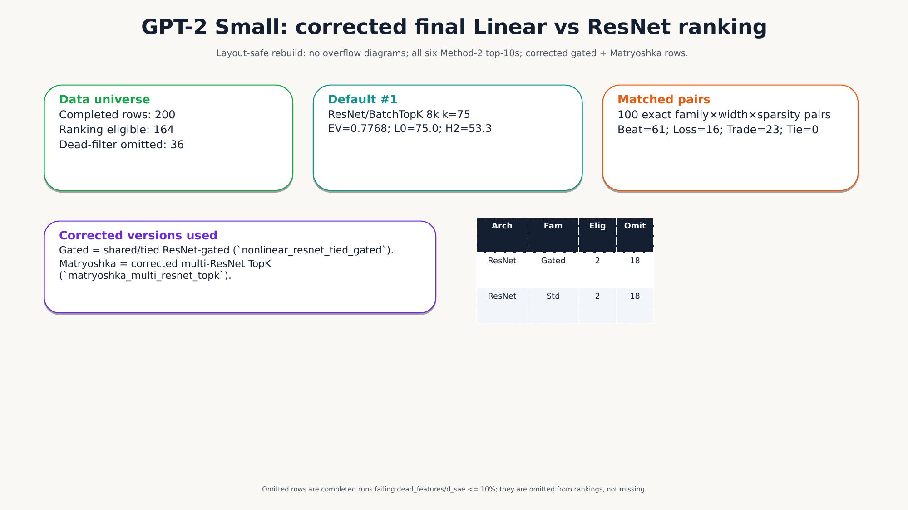

Thread Canvas
Research checkpoint · corrected GPT-2 Small ranking
Download PPTX
Open PDF
Promoted artifact · opening checkpoint slide
rendered from native PowerPoint

SLIDE
Opening checkpoint
Rendered slide · PNG
PPTX
Editable research deck
Native PowerPoint
PDF
Research deck PDF
Rendered and checked